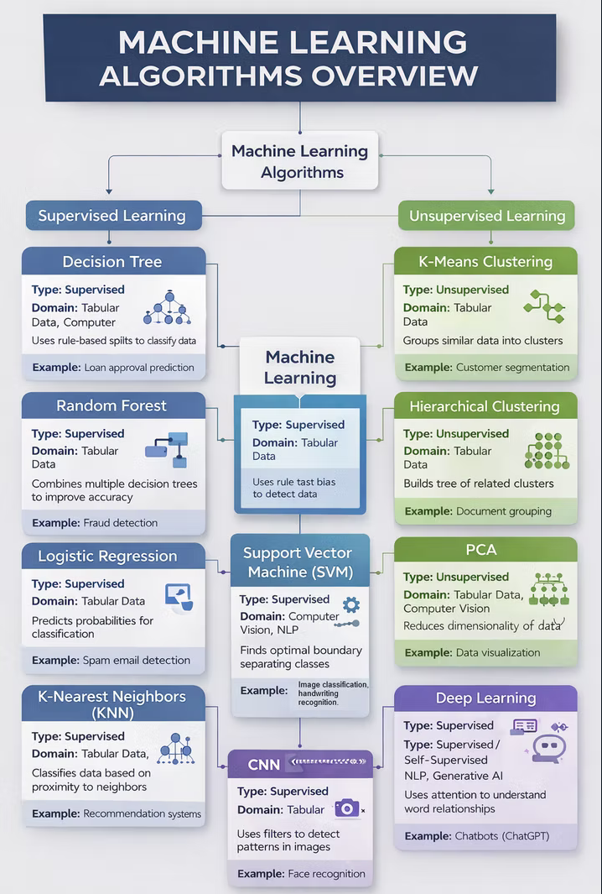
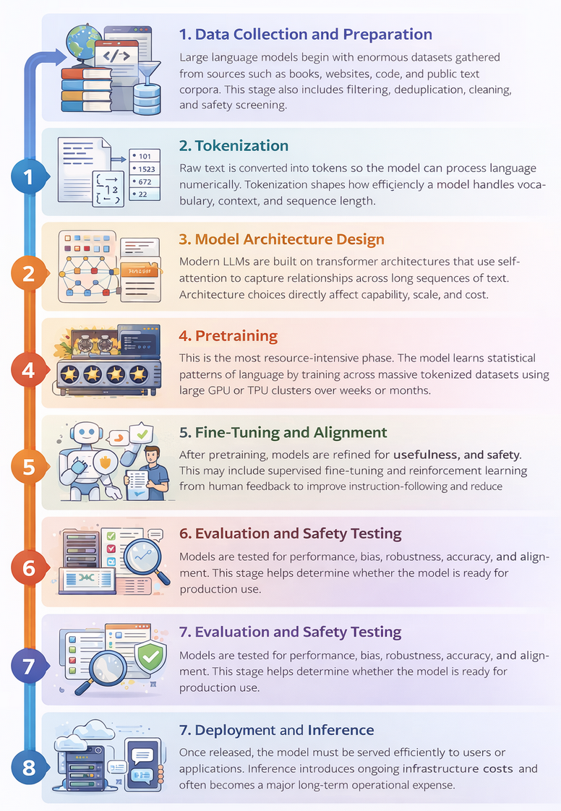
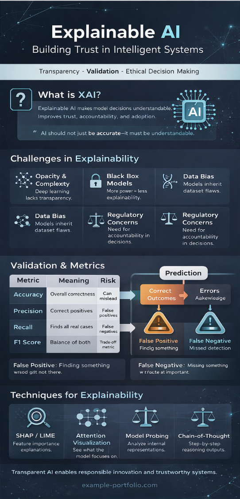

Project Gallery
Detailed Documentation
Mapping the AI Landscape: A Framework for Algorithm Selection
Strategic Framework & Domain MappingThe Challenge: Selecting the correct learning style and architecture is one of the most critical steps in solving real-world problems. This project provides a comprehensive visual and technical framework for categorizing algorithms based on their learning style, application domain, and task functionality.

Domain-Specific Implementations
| Domain | Core Algorithms | Primary Use Case |
|---|---|---|
| Supervised Learning | Random Forests, XGBoost, Decision Trees | Predictive analytics, risk assessment, financial forecasting |
| Unsupervised Learning | K-Means Clustering, PCA, Hierarchical Clustering | Customer segmentation, anomaly detection |
| Deep Learning | CNNs, RNNs, Transformers (BERT, GPT) | Computer vision, speech recognition, translation |
| Generative AI | Diffusion Models, GANs, LLMs | Synthetic data creation, content generation |
Reflection & Insight
This framework strengthened my understanding of how different algorithms align with specific problem types—enabling me to select appropriate models when solving practical problems across analytics, vision systems, and generative AI platforms.
Mapping Non-Linear Logic in Neural Architectures
Visual Presentation & Optimization AnalysisContext: Using the high-complexity Spiral dataset, I mapped how data flows through a network and identified the specific mechanical failures that lead to model plateaus.

| Component | Strategic Role |
|---|---|
| Layers & Neurons | Proper scaling of hidden layers prevents the information bottleneck effect. |
| Weights & Optimization | SGD or Adam update weights based on the loss function. |
| Activation Functions | ReLU and Tanh enable approximation of complex, non-linear functions. |
Solution: Widening hidden layers from 2 to 8 neurons with Tanh activation allowed the model to wrap the spiral armatures more effectively.
Reflection & Insight
Low-level algorithmic choices directly affect high-level network behavior. Whether configuring Linux or building a multi-layer perceptron, success comes down to precise tuning of the underlying system.
Training Large Language Models: Architecture, Pipeline, and Cost Analysis
Infrastructure Roadmap & Resource AnalysisContext: This project explores the end-to-end training lifecycle of LLMs such as GPT, Claude, Gemini, and LLaMA — focusing on both the technical pipeline and the operational economics of LLM training.

Five Critical Cost Drivers
- Data: Collection, licensing, filtering, storage, and processing.
- Compute: Large-scale GPU or TPU clusters used for training.
- Electricity: The energy required to run high-performance hardware continuously.
- Time: Extended training cycles, experimentation, and iteration.
- Talent: Researchers, ML engineers, data engineers, and infrastructure teams.
Reflection & Insight
This project moved me beyond simply using generative AI tools toward understanding the infrastructure decisions behind them. Cost constraints and training strategies directly shape real-world AI implementation.
Explainable AI (XAI): Building Trust in Opaque Systems
Transparency Framework & Validation RoadmapThe Challenge: As generative AI models become more capable, they become more difficult to interpret. This project maps validation techniques and performance metrics used to assess whether AI systems are reliable and trustworthy.

| Area | Description | Why It Matters |
|---|---|---|
| Opacity & Complexity | Models rely on millions/billions of parameters. | Hard to explain how outputs are generated. |
| Post-Hoc Explanations | Explanations generated after the model decision. | Improves interpretability but may not fully reflect reasoning. |
| Bias & Data Quality | Systems inherit noise from training data. | Leads to unfair or misleading decisions. |
| Precision / Recall / F1 | Core classification performance metrics. | Quantify model reliability in deployment. |
Interpretability Techniques
- Attention Visualization: Reveals which input parts the model focuses on most.
- Model Probing: Examines internal layers to understand learned features.
- Chain-of-Thought Prompting: Encourages step-by-step reasoning.
- Human-in-the-Loop Review: Manual oversight for high-risk decisions.
Reflection & Insight
Studying XAI helped me connect technical performance metrics with broader ethical concerns. In cybersecurity, it is not enough to flag an alert — engineers must understand why it was triggered to validate its reliability.